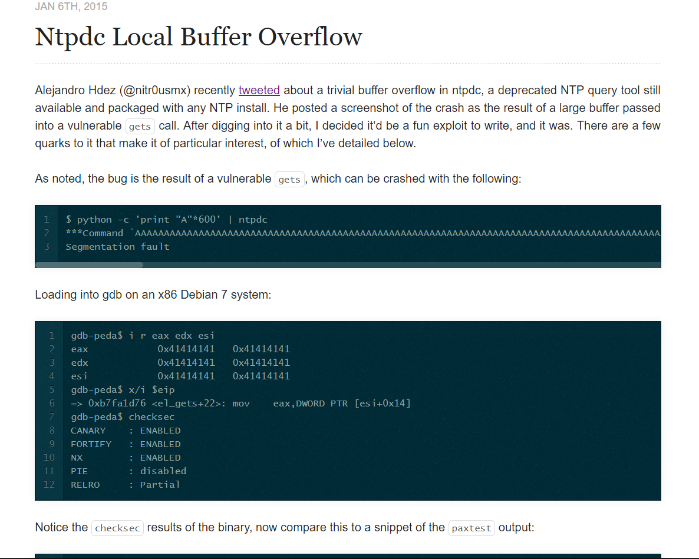
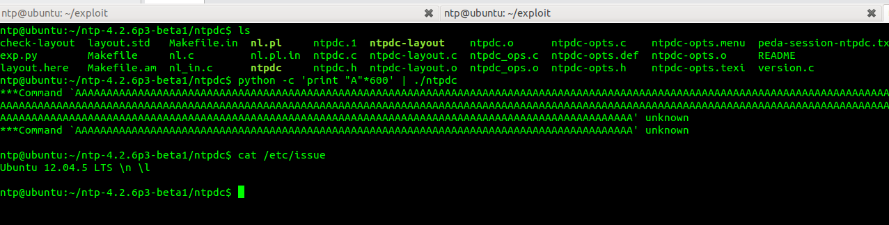
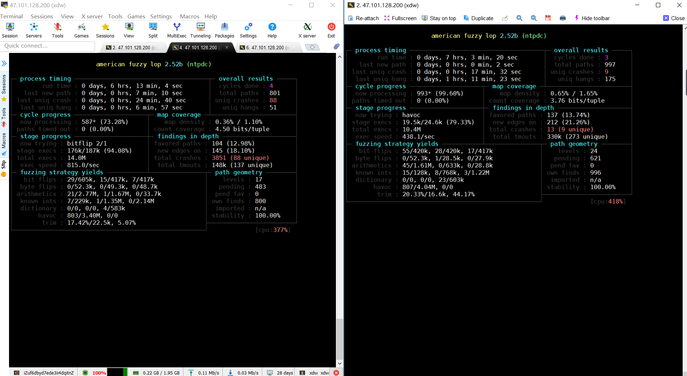
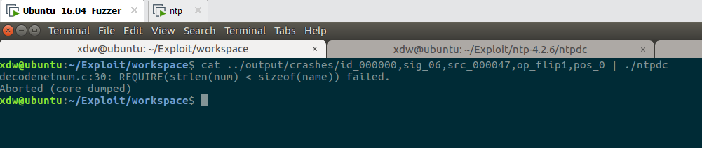
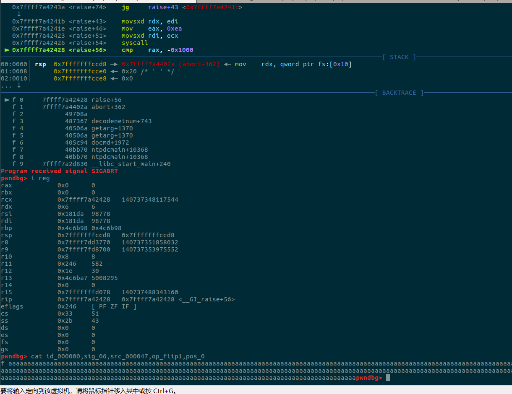
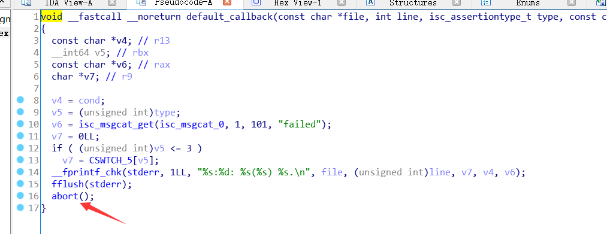
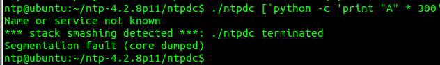
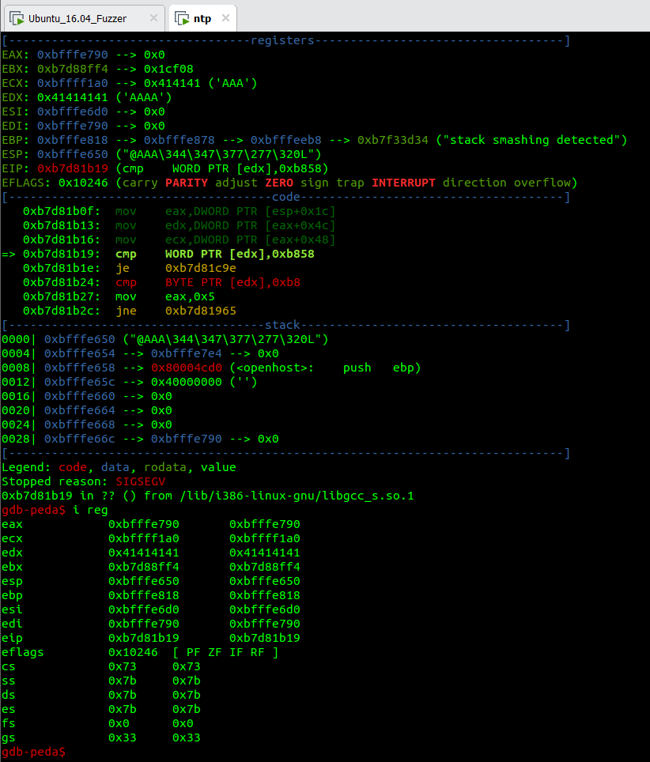

写在前面
ntp是网络时间协议，用来同步网络中的各个计算机时间，之前偶然看到一篇国外dalao对ntp漏洞进行分析的文章，觉得挺有意思的。那个cve好像是2015年出的，是一个Buffer over flow，可以利用。时间相对来说还是有点早的，自己折腾环境测试了一下，发现居然洞没了，翻遍了官网也没找到备份，orz。。。。。想着总不能一无所获吧，就用afl-fuzz给ntp的各个版本来了一发，还真跑出了几个异常，这边就来复盘下分析的过程。
0x01 入坑
网上闲逛的时候无意中看到国外师傅对Ntpdc Local Buffer Overflow的复盘过程，贴一下，看着还有模有样的，成功入坑。

这边他是在x86 Debian 7上测试的，没有环境，就用ubuntu12.05 LTS代替，发现并没有出现Segmentation fault，猜测可能是环境的原因，或者是官方已经把有洞的程序打patch了(历史版本也会打patch的吗，有点不可思议)。

可以看到本地并没有成功，挺不甘心的，fuzz来一梭子。
0x02 Fuzz

Fuzz了几个主流版本，包括最新版，跑了半天，报了不少crashs和hangs，接下来分析一下。
Ntp 4.2.6p3

首先看下版本，这个是源码编译的ntpdc 4.2.6p3版本，老外复现的这个local buffer overflow就是这个版本。

可以看到报洞了,这边开启了转储文件，可以gdb分析一下的，但其实没必要，因为是源码编译，所以直接输出了报错点所在的模块中的行数，可以直接审源码看洞；另外，其实其实这个洞是无法利用的，所以可以优先在gdb中调一下，观察下最后crash时的register，看我们是否能够控制某些寄存器，这是能进行利用&提权的重要条件。

可以看到crash的时候并没有显示莫寄存器和输入是有关联的，所以这个洞能利用的可能性很小了。

ida打开，由报错信息定位到漏洞位置，发现刚才的aborted是触发了开发者自己定义的一个异常处理函数，假如输入长度大于0x49的话，认证失败。

上面是isc_assertion_failed函数部，开发者自定义的abort函数。
Ntp 4.2.8p11
//由于调试环境有问题，从ubuntu16.04换到ubuntu12.05
ntpdc 4.2.8p11版本，上面的输入长度限制的bug已经修复了。

但是fuzz还是跑出来crash，同样是由于是输入获取不严谨导致的问题，这边报错信息是*** stack smashing detected ***，猜测存在栈溢出。

gdb载入，重定向输入文件到程序，运行，i reg查看寄存器

发现edx被覆写成0x41414141，观察堆栈函数调用，进行调用溯源，gdb重新跟一波，发现触发了canary导致程序直接退出。

由于没有泄露canary，这边暂时还没什么好的方法可以绕过，也就无法利用。

ida里比对一下，分析下逻辑。
Ntp 4.2.8p13
这个版本是目前的最新版，相对其它几个版本来说还是很完美的，p11的buffer over flow的bug已经修复，fuzz跑出来的几个crash也是无法利用。NTP牛逼！！！
0x03 总结
Fuzz在实战中的作用真的很大，接下来打算去fuzz一些社区里比较陈旧的开源程序，带着去熟悉fuzz的使用&机制；复现能让你学到很多东西，可以多去复现一些已知的CVE。基本就这些了，加油加油~